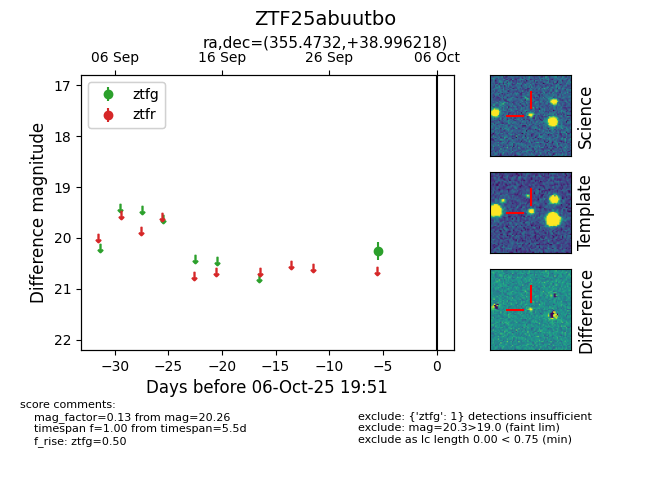

FINK: ZTF25abuutbo
Lasair: ZTF25abuutbo
ALeRCE: ZTF25abuutbo
ZTF25abuutbo (ztf,fink)
equatorial (ra, dec) = (355.4732,+38.99622)
galactic (l, b) = (108.4359,-21.90996)

last ztfg=20.26
1 ztfg detections